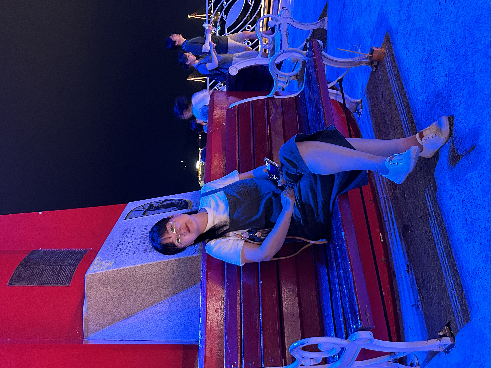
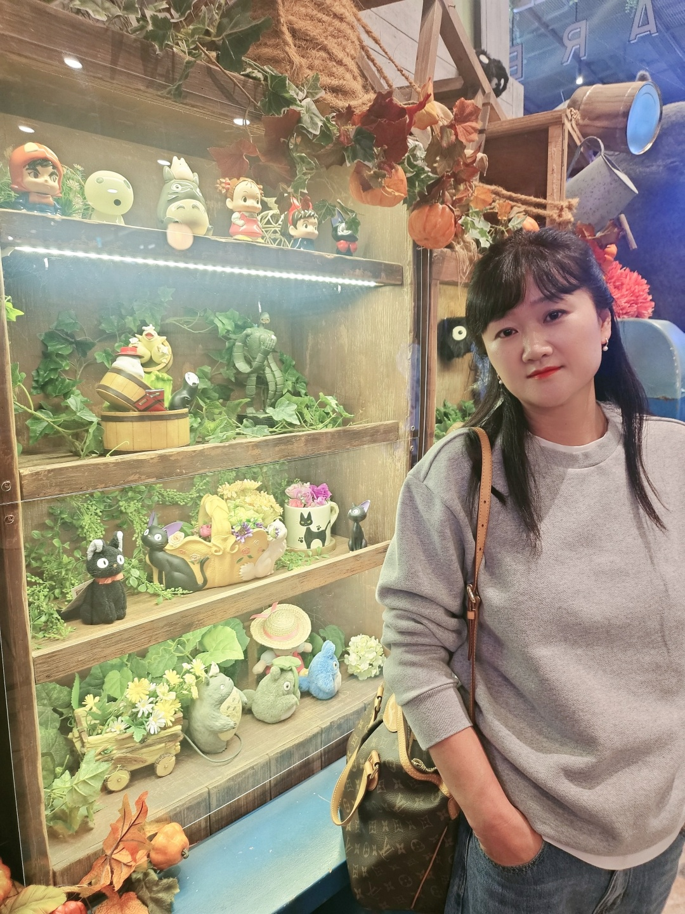
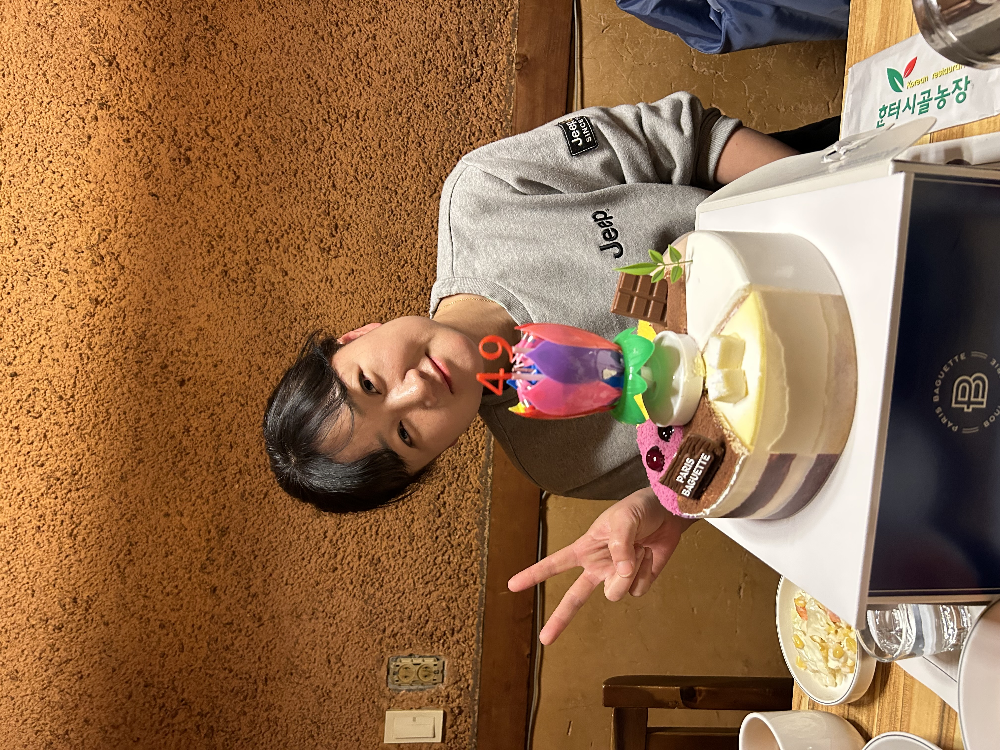
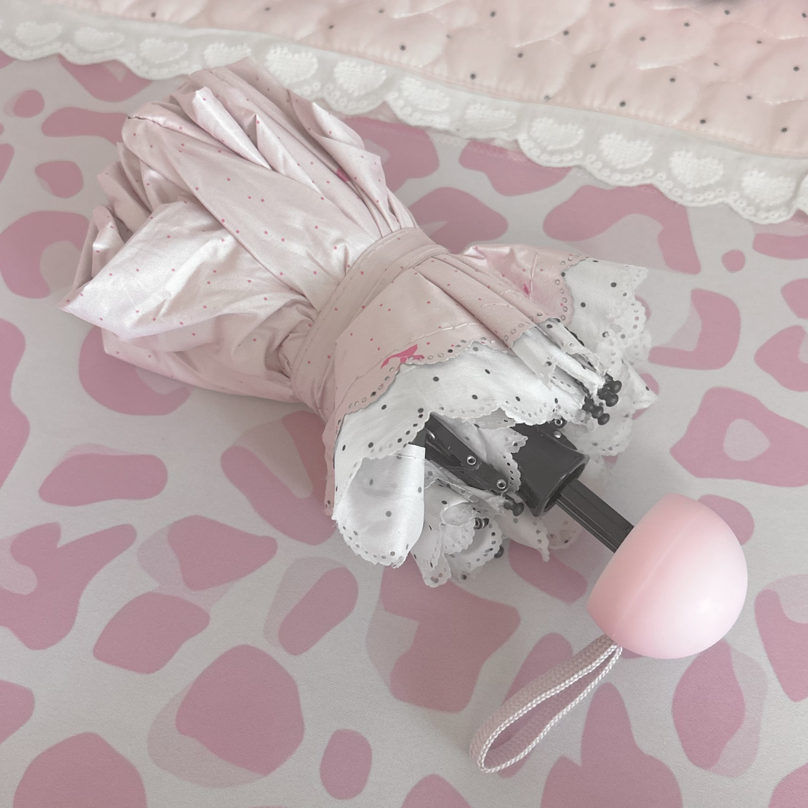
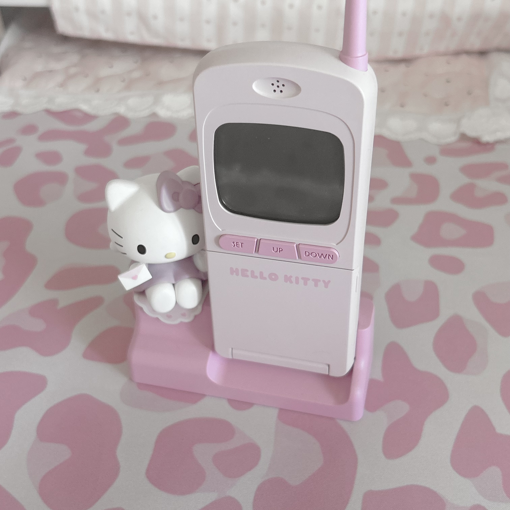
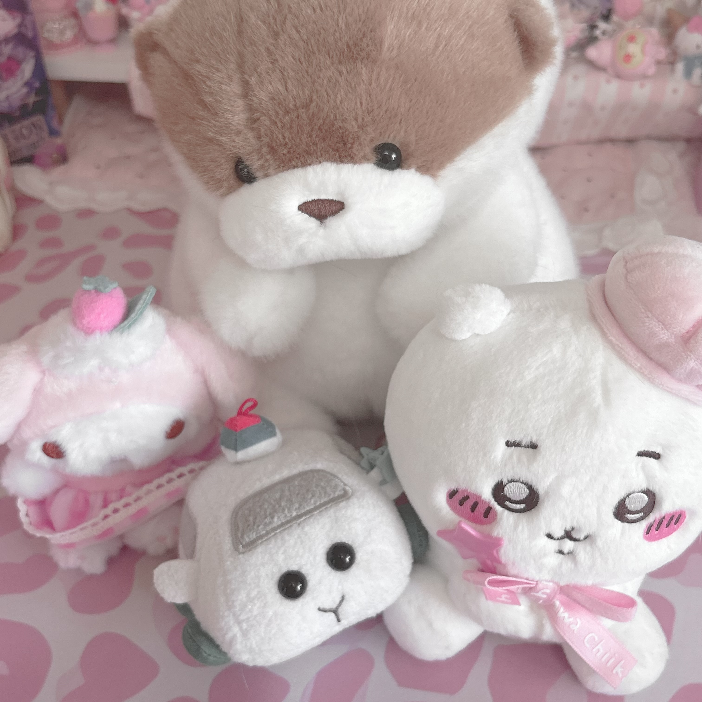
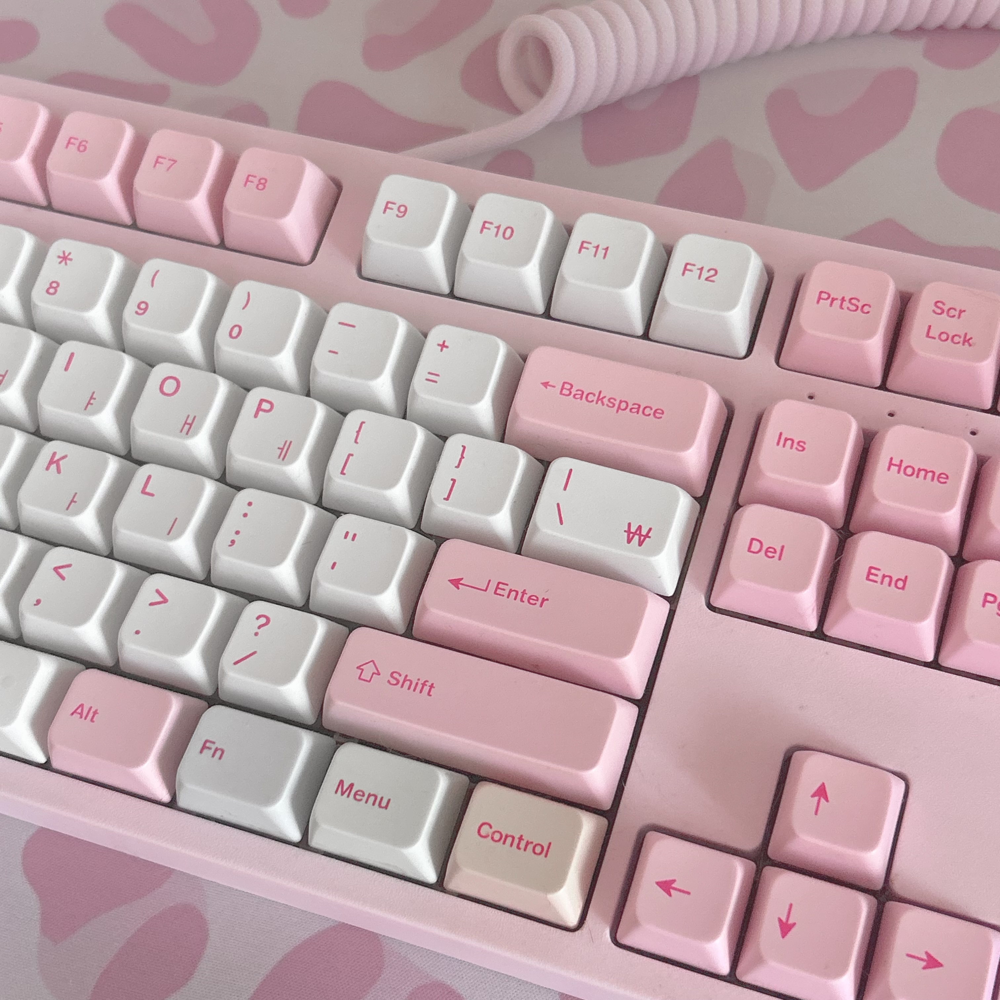
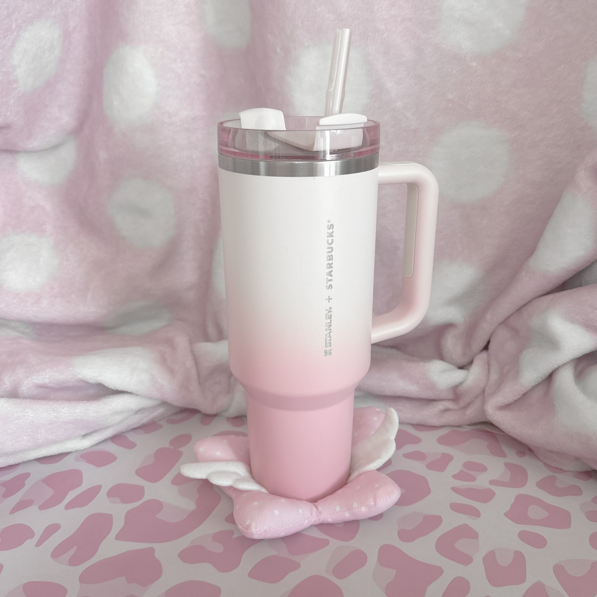

01
새로운 곳에서 찾는 즐거움
가족여행에서 주변 풍경을 즐기며 편안하게 앉아 있는 엄마
엄마는 새로운 장소에 가는 것을 좋아하고, 여행지에서 가족들과 함께하는 순간을 자연스럽게 즐긴다.
YANG SEOYUN · 나의 취향 아카이브
들어가는 말
1장 시선
What waits above, once the road runs out.


What we touch, hold, and make.


Where we go, alone or together.


2장 사람
엄마는 어디에 있든 그 순간을 즐길 줄 아는 사람이다.
엄마는 특별한 날을 혼자 보내지 않는다.
가족과 함께 순간을 즐기고, 그 추억을 오래 간직하는 사람이다.

가족여행에서 주변 풍경을 즐기며 편안하게 앉아 있는 엄마
엄마는 새로운 장소에 가는 것을 좋아하고, 여행지에서 가족들과 함께하는 순간을 자연스럽게 즐긴다.

아기자기하게 모인 장식품들 앞에서 사진을 찍는 엄마
엄마는 작은 소품이나 추억이 담긴 물건을 소중하게 생각하는 사람이다.

엄마의 생일날 생일 케이크 앞에서 가족들과 시간을 보내는 엄마의 모습
엄마는 생일 같은 특별한 날에 가족과 함께 추억을 만드는 것을 좋아한다.
특별한 날을 사람들과 함께 나누는 습관
3장 공간
다섯 장에 담긴 취향
채도를 낮춘 분홍과 하늘색, 크림색. 손끝에 닿을 듯한 천의 결, 그리고 구석구석 놓인 작은 장식들.
채도를 낮춘 부드러운 색이 벽과 창가를 감싼다.
레이스 커튼과 주름 장식, 체크무늬 패브릭이 공간에 섬세한 질감을 더한다.
리본과 화분, 꽃 한 송이 같은 작은 소품이 방 구석구석에 놓여 있다.
방 둘러보기


천장 아래로 이어진 주름 커튼부터 작은 소품과 패브릭까지, 하얀 주방에 놓인 것들을 따라 들어간다.
하늘색 체크 벽지와 크림색 선반. 찻잔과 곰 인형, 옛날 그림이 빼곡히 놓여 있다.
레이스 띠를 두른 분홍 찬장에 작은 카드가 붙어 있다. 그릇마다 귀여운 얼굴이 그려져 있다.
물방울 레이스 커튼 아래 나무 창턱과 하얀 의자. 겨울 햇살이 깊숙이 들어온다.
공통점
4장 물건

햇살이 강한 날이면 우양산을 챙겨 외출한다.

실제로 시간을 확인하는 용도는 아니지만, 인테리어로 두고 있다.

책상에 장식해두면 인형을 준 사람들의 마음과 추억을 간직할 수 있다.

작업을 시작하면 키보드를 두들기며 생각을 글로 옮긴다.

물을 가득 채운 텀블러로 틈틈이 수분을 보충한다.
기준
저마다의 하늘, 서로의 손, 각자의 길
나는 화면의 색을 정할 때 사진과 어우러지는 색을 고른다.
작고 다정한 것들로, 나의 방을 채운다.
보이지 않는 곳의 디테일까지 내 취향으로 고른 물건들